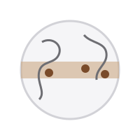

Как кофе попал из Эфиопии в Москву
От легенды о пастухе Калди до первых московских кофеен.

Родина кофе - Эфиопия, где кофейное дерево до сих пор растет в диком виде. Самая известная легенда рассказывает о пастухе Калди, который заметил, что его козы становятся бодрыми, поев красных ягод с незнакомого куста.
Йемен и Аравия
В XV веке кофе начали выращивать и заваривать в Йемене. Суфии пили его, чтобы не засыпать во время ночных молитв. Через порт Моха кофе расходился по всему Арабскому миру.
Первые кофейни
В XVI веке кофейни появились в Стамбуле. Там пили кофе, сваренный в джезве, - так возник способ, который у нас называют кофе по-турецки.
Европа
В XVII веке кофе попал в Венецию, затем в Лондон, Париж и Вену. Кофейни стали местом встреч купцов, ученых и журналистов.
Россия
В России кофе распространился при Петре I, который познакомился с ним в Голландии. В XIX веке в Москве и Петербурге работали уже десятки кофеен, а сегодня кофе - один из самых популярных напитков в стране.